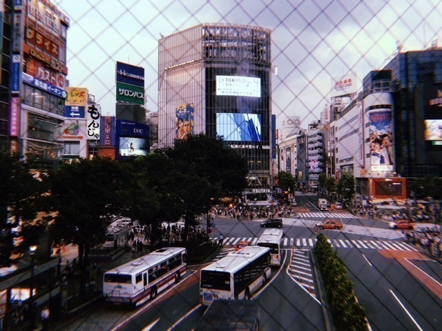
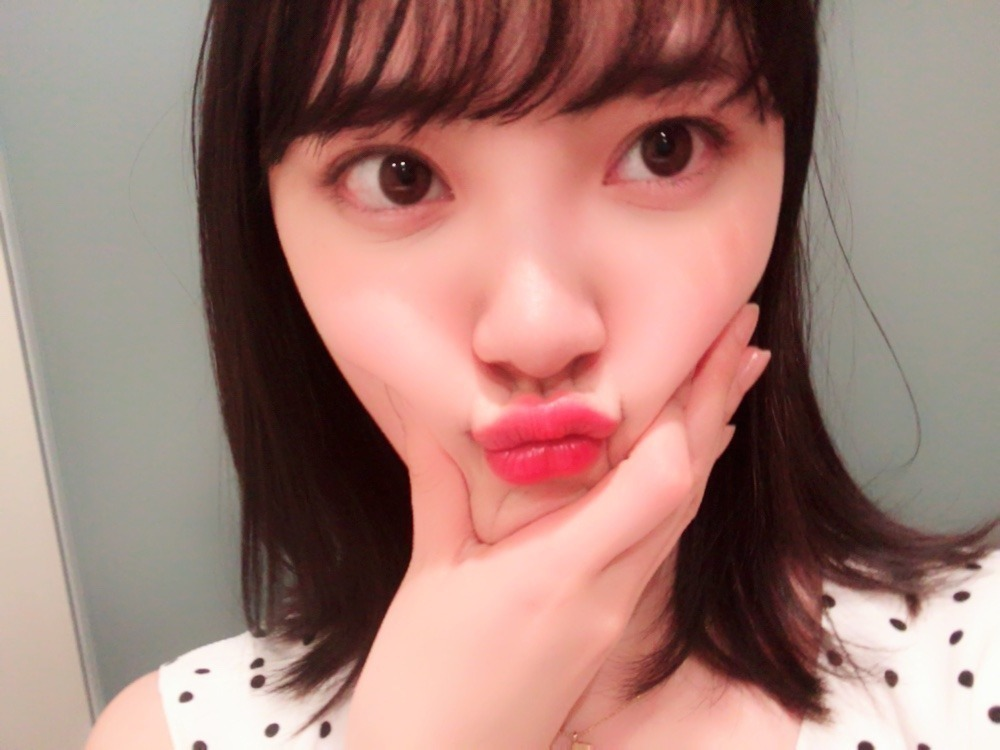

2018/1005Friふとしたとき
最近よく聴く
チャットモンチーさん。
絶妙な歌詞とメロディが癖になります。
女子は特に好きな世界観ですよね！
染まるよ
真夜中遊園地
恋の煙
バスロマンス
例えば、
が好き

渋谷
握手会ブースに祝花！
嬉しい ありがとうございます！


前回の自己紹介ブログ
どうでしたか？

メイクやヘアなど女の子向けブログも
今、書いてます〜
質問あれば、何でもこちらにどうぞ。

このポーズ自分の中で
はまってるみたい。笑
なんかじわじわ
では！
2018/10/05 15:36
コメント(666)
みおなの笑顔見ると元気になります✨
チャットモンチーさん！
良いですよね！
恋の煙！！！
良いですよね！
恋の煙！！！
未央奈おつかれ。ホットギミックの撮影頑張ってね。
みおなちゃん乃木坂好きになったきっかけでもあります。
初めて見てえ、こんなかわいい子いるの！？ってなって、そこから動画やら画像やら気づいたらたくさん見てました。歌番組に出ててもいつもみおなちゃんを目で追っています。
ブログとか見て本当にいろんな努力をしてるし、いろんな考えを持ってしっかりしている人だな。すごいな。といつも思います。憧れであり尊敬している方です。顔もめちゃめちゃ可愛くてほんとに大好きです！！受験終わったら必ず握手会、ライブ行きます！！名前覚えてもらえるように頑張ります！笑
これからもずっと応援しています。頑張ってください！
あとメイクとヘアのことも知りたいです、、笑
みおなちゃん大好き！！！
初めて見てえ、こんなかわいい子いるの！？ってなって、そこから動画やら画像やら気づいたらたくさん見てました。歌番組に出ててもいつもみおなちゃんを目で追っています。
ブログとか見て本当にいろんな努力をしてるし、いろんな考えを持ってしっかりしている人だな。すごいな。といつも思います。憧れであり尊敬している方です。顔もめちゃめちゃ可愛くてほんとに大好きです！！受験終わったら必ず握手会、ライブ行きます！！名前覚えてもらえるように頑張ります！笑
これからもずっと応援しています。頑張ってください！
あとメイクとヘアのことも知りたいです、、笑
みおなちゃん大好き！！！
スキンケアおしえてください！！
未央奈ちゃん、
今日も1日お疲れ様です(^^)
スキンケアには何を使っていますか？
教えて欲しいです！
肌寒くなってきたので、お身体に気を付けて
頑張ってください(^^)
今日も1日お疲れ様です(^^)
スキンケアには何を使っていますか？
教えて欲しいです！
肌寒くなってきたので、お身体に気を付けて
頑張ってください(^^)
パコ横の個握6枚あたったーーー！！
みおな初なんだ！！たのしみ♪
おすすめプチプラリップ、アイシャドウ、ヘアケア用品教えて下さい！あとショートのアレンジ！
みおな初なんだ！！たのしみ♪
おすすめプチプラリップ、アイシャドウ、ヘアケア用品教えて下さい！あとショートのアレンジ！
ブログありがとう
映画の撮影、忙しい中にも楽しんでいるようでなによりです！
レコメン聴いたから、いつかの握手会にはグレーのパーカー着ていくね
でわまたコメントします。
映画の撮影、忙しい中にも楽しんでいるようでなによりです！
レコメン聴いたから、いつかの握手会にはグレーのパーカー着ていくね
でわまたコメントします。
堀ちゃん、今日もお疲れ様です。ブログ更新ありがとう！
自分もチャットモンチー大好きです！高校生の頃軽音部でハナノユメとか恋の煙とか染まるよとかやりました。親知らずという曲も大好きです。
自分もチャットモンチー大好きです！高校生の頃軽音部でハナノユメとか恋の煙とか染まるよとかやりました。親知らずという曲も大好きです。
未央奈ブログ更新ありがとう！
自己紹介ブログすごく良かったよ。
未央奈のほっぺ挟むポーズかわいい！
自己紹介ブログすごく良かったよ。
未央奈のほっぺ挟むポーズかわいい！
ブログの更新ありがとう！
ホント可愛いわー
ぷにゅって音が聞こえる！
個握が楽しみだなー楽しみだ！
ホント可愛いわー
ぷにゅって音が聞こえる！
個握が楽しみだなー楽しみだ！
お疲れ様です。
頑張ってください。
頑張ってください。
堀ちゃん、好きだー
みおなとっても肌きれいだけど 今使ってる洗顔、化粧品、乳液とニキビができたときの治し方あれば教えてほしい（ ; ; ）♡
堀ちゃーーーーーーーん
今回の個握ほぼ全落ちした…。2月3日の3部か4部が1枚当たっただけだったよぅ すっごくすっごくすっごくすーーーーーっごく悲しいというか、切ない
すっごくすっごくすっごくすーーーーーっごく悲しいというか、切ない
まだ３次でも投げれたら沢山投げとくね

頑張って全日参加はできるようにする
堀ちゃん、チャットモンチーさんが好きなのかぁ このあと聞いてみるね
このあと聞いてみるね まおは乃木坂の曲しか割と聞かないからさ…（笑）スカウトマン結構好きなんだよね
まおは乃木坂の曲しか割と聞かないからさ…（笑）スカウトマン結構好きなんだよね
 曲調ってゆうかがいいんだよね
曲調ってゆうかがいいんだよね あ！あれだ。乃木坂以外で少しハマってるの、（ あいみょん ）って人の（ 愛を伝えたいだとか ）と（ 貴方解剖純愛歌 ）て曲が少し個性的だけどハマってるかなぁよかったら、聞いてみてね
あ！あれだ。乃木坂以外で少しハマってるの、（ あいみょん ）って人の（ 愛を伝えたいだとか ）と（ 貴方解剖純愛歌 ）て曲が少し個性的だけどハマってるかなぁよかったら、聞いてみてね
え女の子向けblog堀ちゃん出してくれるの。。。結構すごい嬉しみだ
arの雑誌みてて堀ちゃんの可愛さに引かれて、もともとすごく気になってはいたけど多分もうめっちゃ好きになってだから堀ちゃんに憧れてて、堀ちゃんみたいになりたくて頑張って日々精進しおります と言っても、メイクも初心者で何もわからなくてすごく困って何をどうすればいいかわからないんだけど…なので、お言葉に甘えて質問しちゃってもいいですか、？（笑）
①アイメイクはどんなものを使ってますか（ 使う時に気をつけていることなどあれば教えて貰えたらとてもとても… ）
②blogの最後のぶちゅ。って写真のリップはどこのですか。すごく可愛くて、発色も綺麗なんで買えれば欲しいなぁと、
③ライブとかの長時間の時リップが落ちないようにこうしてるとかありますか…？
④同じくライブなのですが、動いて汗かいたら前髪（ 量は少なめです ）がペタってなるんですけどどうやったら保てますか
沢山質問しちゃってごめんなさい
まお
今回の個握ほぼ全落ちした…。2月3日の3部か4部が1枚当たっただけだったよぅ
まだ３次でも投げれたら沢山投げとくね
頑張って全日参加はできるようにする
堀ちゃん、チャットモンチーさんが好きなのかぁ
え
arの雑誌みてて堀ちゃんの可愛さに引かれて、もともとすごく気になってはいたけど多分もうめっちゃ好きになって
①アイメイクはどんなものを使ってますか（ 使う時に気をつけていることなどあれば教えて貰えたらとてもとても… ）
②blogの最後のぶちゅ。って写真のリップはどこのですか。すごく可愛くて、発色も綺麗なんで買えれば欲しいなぁ
③ライブとかの長時間の時リップが落ちないようにこうしてるとかありますか…？
④同じくライブなのですが、動いて汗かいたら前髪（ 量は少なめです ）がペタってなるんですけどどうやったら保てますか
沢山質問しちゃってごめんなさい
まお
高校時代「サラバ青春」めちゃくちゃ聴いてたなぁ
今聴いてもジーンとする
今聴いてもジーンとする
自己紹介ブログとっても良かったよ！！
未央奈ちゃん髪綺麗でうらやましい(*´-`)
どこのシャンプーとかトリートメント使ってるのー？
あと、美肌の秘訣も教えてほしい！
未央奈ちゃん髪綺麗でうらやましい(*´-`)
どこのシャンプーとかトリートメント使ってるのー？
あと、美肌の秘訣も教えてほしい！
未央奈～(^^)
自己紹介ブログはよかったよ！
初めて個握行くけど何してもらったら嬉しい？
全握のときは時間ないから私はまずは自己紹介したいと思うけど大丈夫かな？
楽しみにしてるね❤️
自己紹介ブログはよかったよ！
初めて個握行くけど何してもらったら嬉しい？
全握のときは時間ないから私はまずは自己紹介したいと思うけど大丈夫かな？
楽しみにしてるね❤️
最近メイクを始めようと思ってるんですけど、みおなちゃんが最初に買って使ったアイシャドーってなんですか？
ブログ更新ありがとー！
かわいすぎ(*´ω`*)
かわいすぎ(*´ω`*)
どうして乃木坂の子はあんなに髪の毛がつやつやでサラサラなのか知りたい！
どうしたらそうなれるの〜〜？？
どうしたらそうなれるの〜〜？？
未央奈～
個握行きたいけど取れないよ～
半年も先なのに～
まだまだ頑張って申し込んで
なんとしても会いに行きますね。
個握行きたいけど取れないよ～
半年も先なのに～
まだまだ頑張って申し込んで
なんとしても会いに行きますね。
とにかく好きだ♫〜好きだ〜！
ブログ更新ありがとうねー！
ブログ更新ありがとうねー！
ブログ更新ありがとうーーー！！
前回のブログ、未央奈のことまた知れて良かったです！
自撮りのポーズ可愛すぎな。笑笑
個人的に未央奈の努力する姿勢を本気で尊敬してるんですけど、その原動力とか教えて欲しいです
お仕事頑張ってください！
前回のブログ、未央奈のことまた知れて良かったです！
自撮りのポーズ可愛すぎな。笑笑
個人的に未央奈の努力する姿勢を本気で尊敬してるんですけど、その原動力とか教えて欲しいです
お仕事頑張ってください！
更新ありがとう！未央奈ちゃんだいすき♡
私もチャットモンチー好きだったから嬉しい！
私もチャットモンチー好きだったから嬉しい！
未央奈！
ブログ更新ありがとう
チャットモンチーさん聴いたときない！
聴いてみようかな
チャットモンチー
モンチー
モンキー
ホーリー
ホーリーの歌声聴く♪
前回のブログ未央奈のマイブーム知れて良かった
男だけど質問です ♂️
20歳になったのに肌が綺麗になりません
未央奈はどんなスキンケアしてる？？
最後の写真めっちゃ可愛い！！
ちょっとだけ純ちゃんに似てる❣️❣️
次のブログも楽しみにしてます！
ばいばーい
ブログ更新ありがとう
チャットモンチーさん聴いたときない！
聴いてみようかな
チャットモンチー
モンチー
モンキー
ホーリー
ホーリーの歌声聴く♪
前回のブログ未央奈のマイブーム知れて良かった
男だけど質問です ♂️
20歳になったのに肌が綺麗になりません
未央奈はどんなスキンケアしてる？？
最後の写真めっちゃ可愛い！！
ちょっとだけ純ちゃんに似てる❣️❣️
次のブログも楽しみにしてます！
ばいばーい
いつもブログ更新ありがとう！！
未央奈大好きです
未央奈大好きです
未央奈ちゃん自己紹介めっちゃよかったー！
アイドルだからこそ聞きたいのは色落ちしずらいリップを教えて欲しい〜
アイドルだからこそ聞きたいのは色落ちしずらいリップを教えて欲しい〜
こんばんは。
渋谷のスクランブル交差点、画になりますね。
前回の自己紹介ブログですが、大変ありがたかったです。
後発組の自分ですが、雑誌のインタビューより親近感があり、とても身近な雰囲気でした。
流石のムード作りです。
堀さんには、白が似合いますけど、ブルーも似合います。
自分もブルー好きです。
フェルメールの代表作、真珠の耳飾りの少女のターバンがラピスラズリの優しい青、あれが好きで8万円位したレプリカ画も持ってます。
フェルメール展ありますね。
地味ですが、光の技法を感じて下さい。
雨が続きましたが、土曜日からは風はさて置き秋晴れが続くとか。
共に秋空を楽しみましょうね。
頑張って行きましょう！
渋谷のスクランブル交差点、画になりますね。
前回の自己紹介ブログですが、大変ありがたかったです。
後発組の自分ですが、雑誌のインタビューより親近感があり、とても身近な雰囲気でした。
流石のムード作りです。
堀さんには、白が似合いますけど、ブルーも似合います。
自分もブルー好きです。
フェルメールの代表作、真珠の耳飾りの少女のターバンがラピスラズリの優しい青、あれが好きで8万円位したレプリカ画も持ってます。
フェルメール展ありますね。
地味ですが、光の技法を感じて下さい。
雨が続きましたが、土曜日からは風はさて置き秋晴れが続くとか。
共に秋空を楽しみましょうね。
頑張って行きましょう！
超絶可愛いー未央奈ー
少し前に夢に未央奈さんが出てきたけど、可愛いすぎた！
花がすごく似合いますね。透き通るような肌に映える
花がすごく似合いますね。透き通るような肌に映える
ホットギミックの撮影頑張ってね！！
チャットモンチーさん私も好きよ〜！！
ずっと応援してるからね！
テストの成績が良かったら個握いけるから頑張るね！
全握は絶対行く！！勉強がんばるね！！
大好き！！
チャットモンチーさん私も好きよ〜！！
ずっと応援してるからね！
テストの成績が良かったら個握いけるから頑張るね！
全握は絶対行く！！勉強がんばるね！！
大好き！！
ブログ更新ありがとう～
未央奈可愛すぎ～！！
未央奈可愛すぎ～！！
みおな★☆☆タンポポだけども～♪♪♪
( ；∀；)
前回の自己紹介ヤバいわ～♪
あーゆーの嬉しいわ♪♪♪
ほぼ熟知してる内容やったけど笑
可愛い♪みおな♪♪
みおなが泣きたいときに
オススメしてくれた
『ぼくは明日は、昨日のきみとデートする』を観たよ！！！
この映画をオススメするみおなのこ心の清らかさにも感動した♪♪
俺も泣いた～♪♪♪
今は『溺れるナイフ』を
観てるぞ～♪♪♪
みおな大好きやねん♪♪♪
みおなはタンポポの人生のキキだよ！！タンポポはキキだよ！！
ほな！！タンポポより
ほんま、可愛いな～♪みおなは♪
(ノ´∀｀*)
女子です！いつも応援してます！
ほりちゃんの前髪の秘訣をしりたいです♡！
ほりちゃんの前髪の秘訣をしりたいです♡！
おつれの 塩アイス大好き
塩アイス大好き
ジジかわいい！
堀さんは倍かわいい、、。
堀さんは倍かわいい、、。
チャットモンチーかあ。
解散しちゃったよね。
あの子達、四国の徳島なんよね。
だから。
ガールズバンドとか、そんなに好きなわけではないけれど。
彼女達はしってるよ。
チャットモンチー好きとか。
なんか嬉しいな。
みおなさん推しになろかな？
名古屋行全握行きます！
遠いんで、今日出発です。
なんとか、台風もそれてくれました。
ちなみに。
四国ですけど徳島じゃあありません。
四国で唯一、山を越えて海を渡らないと本土に行けません。
唯一、瀬戸内ではありません。
さて。どこでしょう？
解散しちゃったよね。
あの子達、四国の徳島なんよね。
だから。
ガールズバンドとか、そんなに好きなわけではないけれど。
彼女達はしってるよ。
チャットモンチー好きとか。
なんか嬉しいな。
みおなさん推しになろかな？
名古屋行全握行きます！
遠いんで、今日出発です。
なんとか、台風もそれてくれました。
ちなみに。
四国ですけど徳島じゃあありません。
四国で唯一、山を越えて海を渡らないと本土に行けません。
唯一、瀬戸内ではありません。
さて。どこでしょう？
バスロマンス、私も好きです！
チャットモンチーで僕が一番好きな曲は、惚たる蛍です。
夜に聴くと、とても切ない気持ちになりますよ！
切ない曲が多いチャットモンチーの中で、特に切ない曲だと思います！
夜に聴くと、とても切ない気持ちになりますよ！
切ない曲が多いチャットモンチーの中で、特に切ない曲だと思います！
みおなちゃんは、髪の毛のセットする時って、
何か使ってますか？
あと、高校生になってメイクを少しずつ
勉強してるんですけど、
何かこれは絶対あったほうがいい！
って思うものはありますか？
聴きたいでーす！
何か使ってますか？
あと、高校生になってメイクを少しずつ
勉強してるんですけど、
何かこれは絶対あったほうがいい！
って思うものはありますか？
聴きたいでーす！
チャットモンチー！風吹けば恋もいいですよ！
前回の自己紹介ブログ、新しい発見もあって良かったです。
前回のコメントにも書きましたが、知っていたつもりでも、実は知らない事ってあるんですよね。
気をつけないとです。
(;^_^A
前回のコメントにも書きましたが、知っていたつもりでも、実は知らない事ってあるんですよね。
気をつけないとです。
(;^_^A
みおたんきゃわたん ♡
写真とても可愛いですね!
そういえば先日堀ちゃんの生誕記念グッズが届きました!あと東京での個別握手会初めて当たったので堀ちゃんに会えるのをとても楽しみにしてます!
そういえば先日堀ちゃんの生誕記念グッズが届きました!あと東京での個別握手会初めて当たったので堀ちゃんに会えるのをとても楽しみにしてます!
ベースメイク教えてほしい！
未央奈がよく使うリップ教えてほしい！
あと、22枚目個握当たったよ〜〜
未央奈に会えるの楽しみにしてます♡
あと、22枚目個握当たったよ〜〜
未央奈に会えるの楽しみにしてます♡
みおなぁ！メイクについて聞きたいんだけど二重のラインとかアイラインは引いてるの？引いてるならどんなふうに引いてるか教えて欲しい！
普段のスキンケアを知りたい！！
これからも頑張ってね！
これからも頑張ってね！


今お気に入りのメイク法教えてください